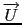
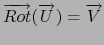
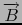
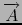

suivant: Équations
monter: Les expressions de plusieurs
précédent: Le potentiel : potential
Table des matières
Index
Champ à flux conservatif : vpotential
vpotential a deux arguments : un vecteur
 de
de
 n dépendant
de n variables et le vecteur constitué du nom de ces variables.
n dépendant
de n variables et le vecteur constitué du nom de ces variables.
vpotential renvoie un vecteur
 tel que
 si bien sûr,
cela est possible ! On dit alors que
est un champ à flux
conservatif ou un champ solénoïdal.
La solution générale est la somme d'une solution particulière et du
gradient d'une fonction arbitraire, Xcas renvoie le vecteur solution
particulière de première composante nulle.
On sait qu'un vecteur
est un rotationnel si et seulement si sa divergence
est nulle : autrement dit si divergence(V)=0.
En électro-magnétisme on a :
=
= le champ magnétique et
=
= le potentiel vecteur.
vpotential est la fonction réciproque de curl.
On tape :
vpotential([2*x*y+3,x^2-4*z,-2*y*z],[x,y,z])
On obtient :
[0,(-(2*y))*z*x,-x^3/3-(-(4*z))*x+3*y]
Documentation de giac écrite par Renée De Graeve